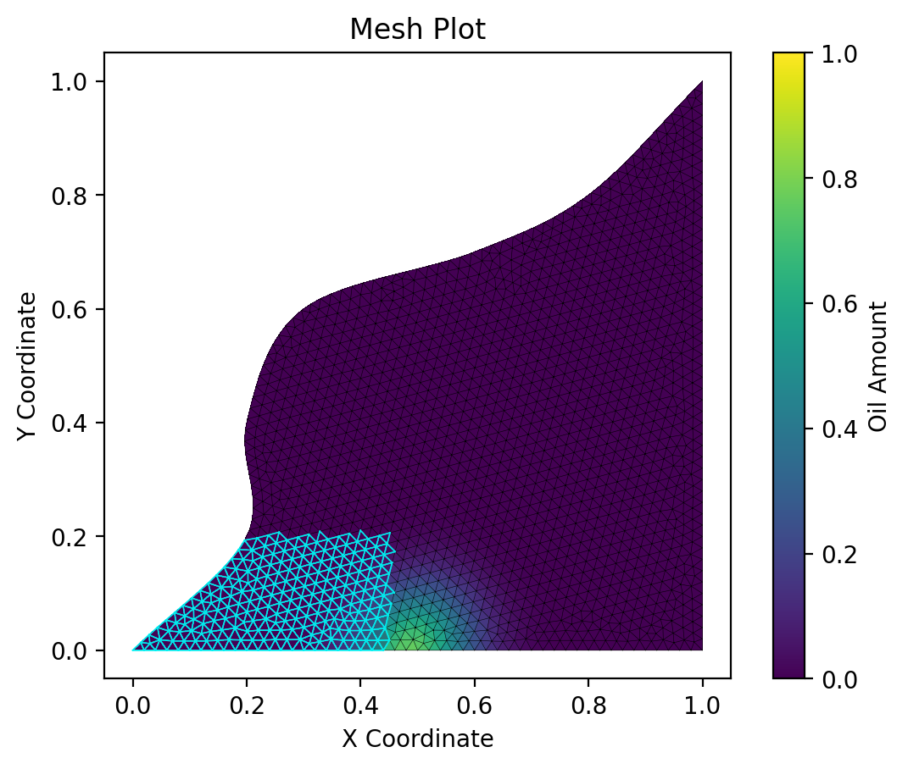

SCIENTIFIC COMPUTING · NUMERICAL METHODS · SOFTWARE ENGINEERING
From Spill to Shore: Finite-Volume Simulation of Oil Transport
A two-dimensional numerical simulation of oil transport across a coastal region using a finite-volume method on an unstructured triangular mesh.
Overview
This project was developed for INF202 Advanced Programming at the Norwegian University of Life Sciences.
The objective was to simulate the transport of an oil spill across a two-dimensional coastal region and evaluate whether oil reaches a predefined fishing area.
The software combines numerical modelling with modular software engineering practices, including configuration management, automated testing, logging, visualisation, and version control.
Problem
A hypothetical oil spill occurs near Bay City and may affect nearby fishing grounds.
The simulation models how oil concentration evolves over time under a prescribed ocean velocity field and calculates how much oil enters the protected fishing region.
Simulation output

Numerical method
The physical domain is discretised using an unstructured triangular mesh. Each triangle acts as a finite control volume in which the oil concentration is assumed to be spatially constant.
Oil transport is computed using a finite-volume formulation with an upwind numerical flux.
Time integration is performed with an explicit forward Euler method.
Core numerical steps
- Compute the velocity field at cell centres.
- Determine the average velocity across neighbouring triangle interfaces.
- Use the sign of the normal velocity component to determine the upstream oil concentration.
- Compute numerical flux across each edge.
- Update cell-averaged oil concentration using explicit time stepping.
Model setup
The initial oil distribution is represented using a Gaussian concentration profile centred at a predefined location.
A time-independent two-dimensional velocity field transports the oil through the domain.
Boundary elements are represented by non-oil-active line cells, which provide the boundary treatment for the simulation.
Software design
The simulation was implemented as a modular Python package with separate responsibilities for mesh handling, numerical methods, configuration, plotting, and utilities.
- mesh.py — mesh loading and neighbour construction
- cells.py — cell geometry and oil storage
- simulation.py — finite-volume time stepping and flux calculations
- velocity.py — prescribed flow field
- plotting.py — visualisation, frames, and video
- config.py — TOML configuration handling
Configuration
Simulation parameters are stored in TOML configuration files rather than hard-coded into the application.
This allows users to change the mesh, simulation duration, time step, fishing-ground boundaries, and output settings without modifying the source code.
Testing
Automated tests were implemented with pytest to verify key components of the system.
- Triangle geometry calculations
- Mesh neighbour relationships
- Configuration parsing
- Numerical flux calculations
- Interactions between software components
Numerical results
To examine numerical stability, the total simulation time was kept fixed while the number of time steps was varied.
A 200-step simulation produced a final oil value of 0.003025, which was almost identical to the 500-step result.
This indicates temporal convergence for the smaller time-step configurations.
Using only 50 time steps increased the final value to 0.005603, indicating numerical artefacts caused by the larger time step.
Outputs
The program produces several forms of output:
- Logs tracking oil inside the fishing grounds over time
- Final spatial visualisation of the oil distribution
- Intermediate simulation frames
- Optional animation showing oil transport through time
Development workflow
The project followed an iterative development workflow using Git and GitLab.
Tasks were managed using issues, milestones, and a GitLab issue board, while regular commits and merging were used to integrate features incrementally.
The project was developed progressively from a minimum viable product that could load a mesh and visualise the initial oil distribution, followed by numerical flux calculations, time stepping, logging, testing, and animation.
What this project demonstrates
- Translating mathematical formulations into working software
- Numerical simulation on irregular computational meshes
- Modular and maintainable Python software design
- Automated testing and numerical verification
- Scientific visualisation
- Collaborative development using Git and GitLab